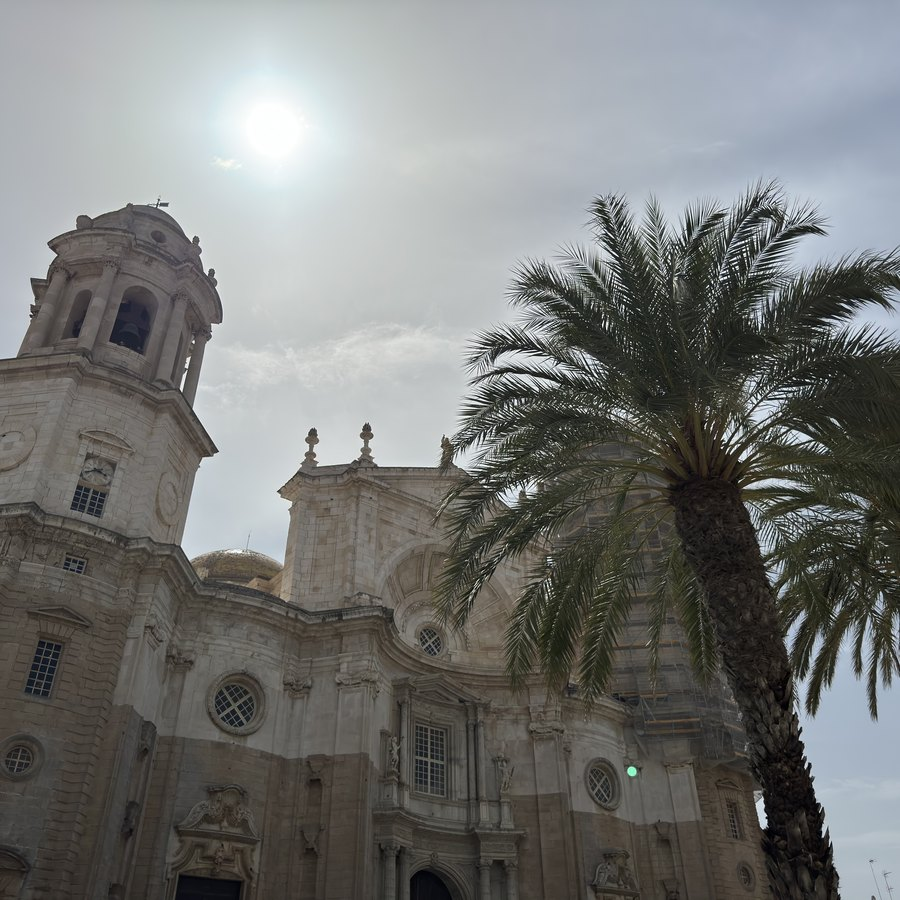
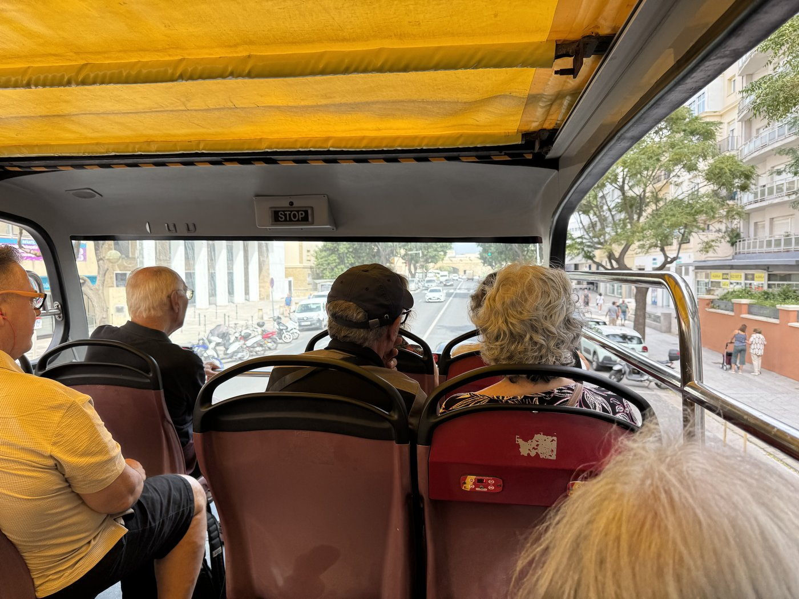
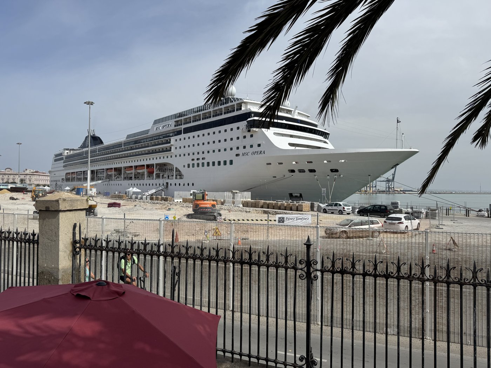
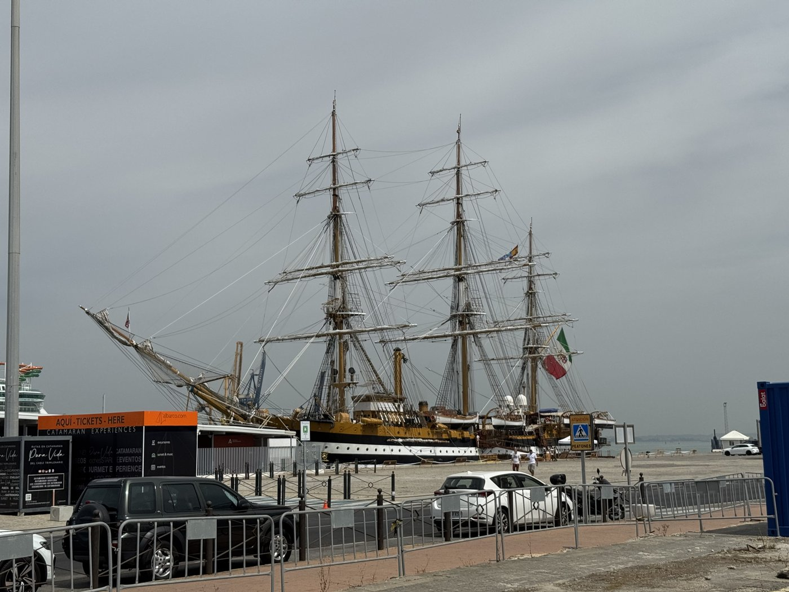
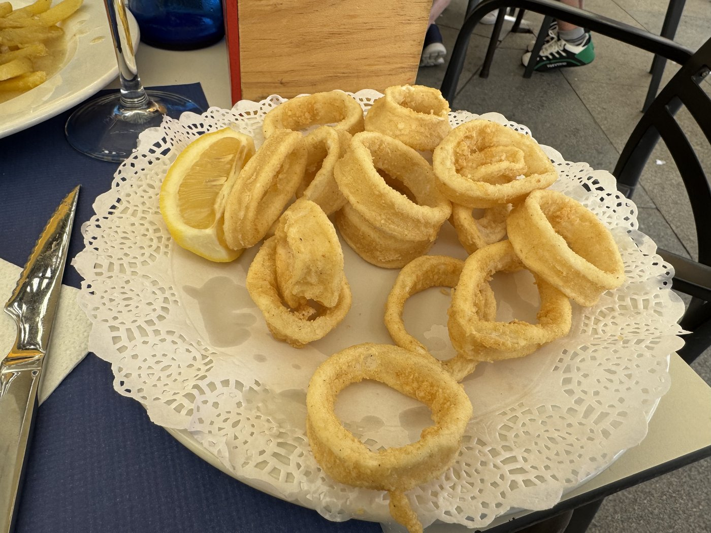
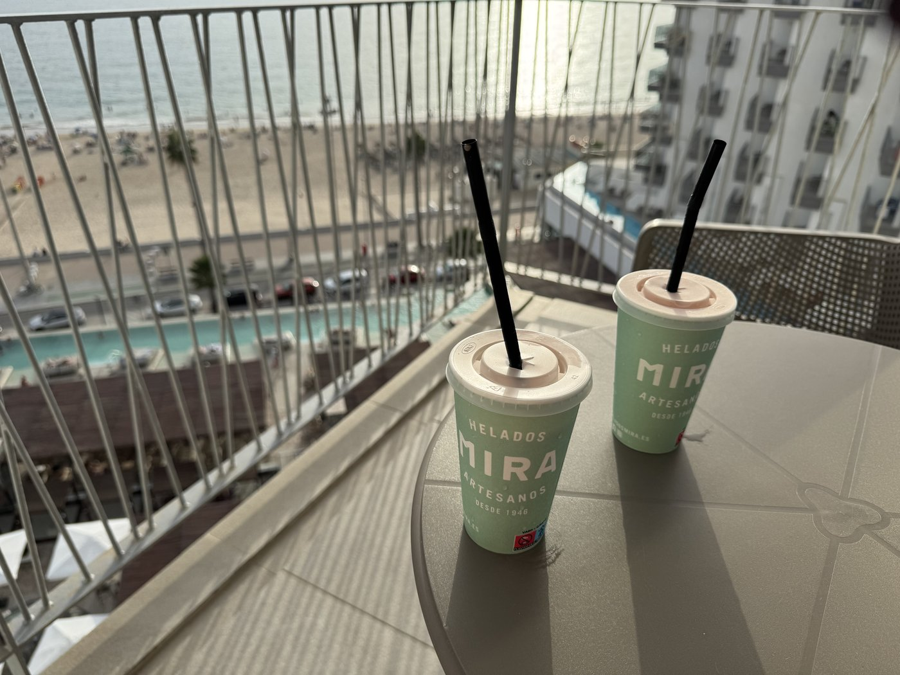
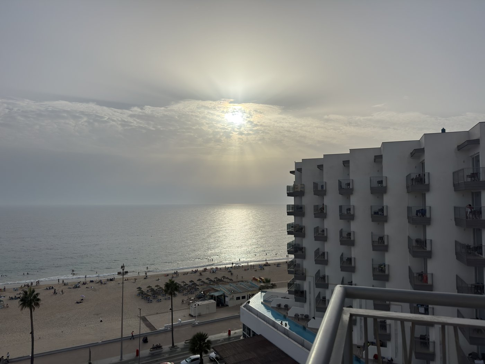

Den Tag haben wir genutzt, um den roten Stadtrundfahrtbus, den es auch hier gibt, für eine erste Erkundung zu nutzen. Das hat hervorragend geklappt: Ich konnte online einen Gutschein kaufen und dafür im Bus, der direkt vor dem Hotel hält, die Tickets bekommen.

Zwei Überraschungen im Hafen
Bei der Fahrt in den Hafen gab es gleich zwei. Die erste: Drei Kreuzfahrtschiffe lagen gleichzeitig dort — die Norwegian Dawn, die MSC Opera und die Liberty of the Seas. Zusammen brachten sie an diesem Tag mehr als 9.500 Passagiere in die Stadt, wie die örtliche Zeitung meldete.Beleg: Portal de Cádiz, öffnet in einem neuen Tab Von denen wollten natürlich viele ebenfalls die Stadtrundfahrt machen. Zum Glück waren wir schon vorher eingestiegen.

Die zweite Überraschung lag ebenfalls im Hafen: ein Großsegler. Die Amerigo Vespucci, Schulschiff der italienischen Marine.

Großsegler sind immer etwas ganz Besonderes — deshalb habe ich mich unbändig gefreut, sie hier zu sehen. Wie sehr, zeigte sich am nächsten Tag.
Das Mysterium der Souvenirläden
Nachdem wir einmal die komplette Runde zur Orientierung gefahren waren, sind wir am Hafen ausgestiegen und haben uns auf einen kurzen Spaziergang in die Altstadt begeben — und dabei das Mysterium der Souvenirläden gelöst, das uns am Vortag beschäftigt hatte: Die sind scheinbar alle in der Altstadt, zumindest zu dieser Jahreszeit.
Ein Mittagessen war auch fällig; das Frühstück hatten wir glatt verschlafen.

Mit unseren Mitbringseln sind wir jetzt versorgt — bis auf Strandtücher, da haben wir noch keine gefunden. Aber dem Vernehmen nach sollte sich in der Calle San Francisco etwas finden lassen. Perfekt für mich alten Niner.
Batidos de fresa
Zum Abschluß des Tages hatten wir noch Lust auf einen Erdbeermilchshake, und glücklicherweise hat die Eisdiele gleich gegenüber vom Hotel sehr leckere batidos de fresa.


Am Abend gab es dann wieder Livemusik — erst vom Strand, später noch aus dem Hotel.